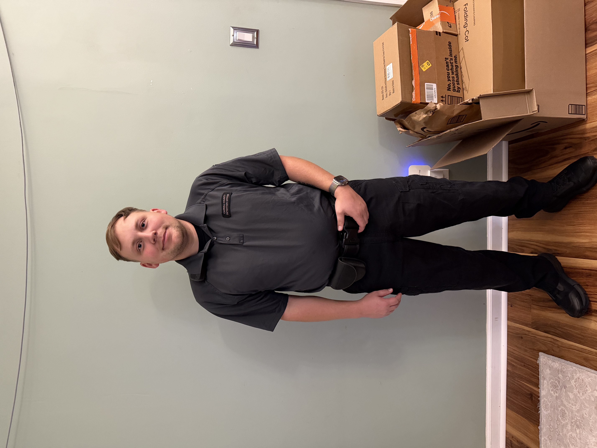

Professional Background
My professional background began with my service in the United States Army, where I worked in a geospatial intelligence role. This experience introduced me to structured environments, analytical thinking, and working with mission-focused objectives. It also helped build a strong foundation in discipline, attention to detail, and responsibility that continues to influence my work today. That foundation led me into my current focus in law enforcement, where I apply many of those same skills in real-world situations.
In addition to my primary role, I also serve in the Georgia State Defense Force, which continues to develop my skills in teamwork, discipline, and emergency response. I also take on part-time work as a substitute teacher, which requires adaptability and communication in a completely different environment. Balancing these roles requires strong time management and flexibility and reflects my overall commitment to service and personal growth.


What Work Teaches Me
My work has taught me the importance of discipline, accountability, and responsibility in every situation. In law enforcement, decisions can have immediate and lasting impacts, which requires me to stay focused and think critically. I have also learned how to communicate effectively with a wide range of people, especially in high-pressure or unpredictable situations. These skills are essential not only in my career but in everyday life.
In addition, balancing multiple roles has taught me how to manage my time and prioritize what matters most. Whether I am working in law enforcement, serving in the State Guard, or stepping into a classroom, each role requires a different mindset and approach. Learning how to switch between these responsibilities has improved my adaptability and problem-solving skills. Overall, my work continues to shape my character and prepare me for future opportunities.